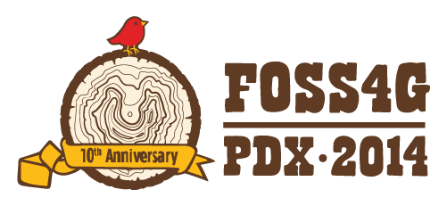
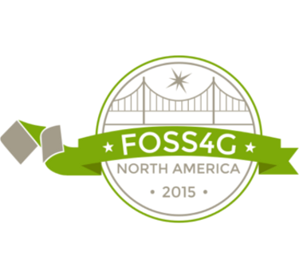

<!DOCTYPE html>
<html lang="en">
  <head>
    <meta charset="utf-8" />
    <meta name="viewport" content="width=device-width, initial-scale=1.0, maximum-scale=1.0, user-scalable=no" />

    <title>reveal-md</title>
    <link rel="stylesheet" href="./css/reveal.css" />
    <link rel="stylesheet" href="./css/theme/solarized.css" id="theme" />
    <link rel="stylesheet" href="./css/highlight/zenburn.css" />
    <link rel="stylesheet" href="./css/print/paper.css" type="text/css" media="print" />
    <link rel="stylesheet" href="./_assets/style.css" />

  </head>
  <body>
    <div class="reveal">
      <div class="slides"><section ><section data-markdown><script type="text/template"><div>How Open Communities are Revolutionizing Science</div>
<hr />
<div>
    
    <hr />
    <div style="text-align: right; font-size: 80%">
        Matthew Hanson<br />
        @GeoSkeptic<br />
        <br />
    </div>
    <br />
    <div style="font-size: 50%">@element84</div>
</div>

<aside class="notes"><ul>
<li>Hello, name, company</li>
<li>NH, shortest coastline of any state, 28 km<ul>
<li>much shorter than neighboring Maine, which has longer seacoast than California</li>
</ul>
</li>
<li>the seacoast = NH</li>
</ul>
</aside></script></section><section data-markdown><script type="text/template">


Big EO Data

<aside class="notes"><ul>
<li>Thanks to BLOC for hosting</li>
<li>Vasile invitation to give keynote because of exp with big EO data</li>
<li>Tell story of personal journey through a history of FOSS4G</li>
<li>A ceveat: my own exp, tell me where I&#39;m wrong</li>
</ul>
</aside></script></section></section><section  data-markdown><script type="text/template">
"How Open is revolutionizing science"
<hr />
"How Open Ideas are revolutionizing science"
<hr />
"How Open Software/Data/Standards are revolutionizing science"
<hr />
"How Open (.*) is revolutionizing science"
<hr />

<aside class="notes"><ul>
<li>I played with a few variations of a title</li>
<li>thought long, hard, talked with lots of folks</li>
<li>except...I eventually realized</li>
</ul>
</aside></script></section><section ><section data-markdown><script type="text/template">
Except...it's about the communities
<hr />
software, data, and standards do not create themselves

<aside class="notes"><ul>
<li>it&#39;s the communities that create these</li>
</ul>
</aside></script></section><section data-markdown><script type="text/template">
Looking back...

<aside class="notes"><ul>
<li>Career has largely been about helping make science easier, for scientists</li>
<li>analytics</li>
</ul>
</aside></script></section></section><section ><section data-markdown><script type="text/template">


### 1995 - 2010

remote sensing in government

- multispectral and hyperspectral exploitation
- material mapping and synethetic scene modeling
- object detection and identification
- image registration and geolocation

<aside class="notes"><ul>
<li>algorithm development</li>
<li>governments owned and operated satellites</li>
<li>used by governments and scientists, not industry, not tech community</li>
</ul>
</aside></script></section><section data-markdown><script type="text/template">
### FOSS4G

2010 and earlier

<aside class="notes"><ul>
<li>Birth of the FOSS4G movement in that decade</li>
<li>The first FOSS4Gs</li>
<li>Most Scientists and governments were users<ul>
<li>but a few were contributors and creators</li>
</ul>
</li>
<li>Inception and rise of several important projects</li>
</ul>
</aside></script></section></section><section ><section data-markdown><script type="text/template">


### 2011

pivot to earth science @ Applied Geosolutions

- climate science
- agriculture
- forestry
- soil carbon models

<aside class="notes"><ul>
<li>very small company<ul>
<li>not to be confused with AppGeo in Boston, or GeoSolutions in Italy</li>
</ul>
</li>
<li>scientific processing pipelines</li>
<li>implementing science code as someone who knew about remote sensing and software</li>
<li>used a lot of geospatial OS</li>
<li>and so it was</li>
</ul>
</aside></script></section><section data-markdown><script type="text/template">


vectors and web mapping

<aside class="notes"><ul>
<li>remote sensing wasn&#39;t a big thing</li>
<li>don&#39;t want to display images<ul>
<li>can you turn them into vectors?</li>
<li>with vectors you can do geometric operations</li>
</ul>
</li>
<li>big impact</li>
</ul>
</aside></script></section><section data-markdown><script type="text/template">
returned to work thinking of OS role in science

<aside class="notes"><ul>
<li>returned to work with fresh look on things</li>
<li>saw that most time was spent doing non-science</li>
<li>streamline the process</li>
</ul>
</aside></script></section><section data-markdown><script type="text/template">
Scientists are messy


</script></section><section data-markdown><script type="text/template">
Data provenance is a luxury

<hr />

Publishing papers is the goal
</script></section></section><section ><section data-markdown><script type="text/template">


### 2011 - 2015

earth science
<hr />
Data: Landsat, Sentinel, MODIS, PALSAR, LiDAR
<hr />
started contributing

- GeoNode
- GIPPY - Geospatial Image Processing for Python
- GIPS - Geospatial Image Processing System

<aside class="notes"><ul>
<li>data management</li>
<li>Making it easier to download open data and create Analysis Ready Data<ul>
<li>surface reflectance, and cloud-masked products</li>
</ul>
</li>
<li>L8/L7/L5 and S2 not available as SR</li>
<li>toward the end of my time at this company...</li>
</ul>
</aside></script></section><section data-markdown><script type="text/template">


satellite imagery

the rise of smallsats

<aside class="notes"><ul>
<li>Planet becomining visible (2013)</li>
<li>Landsat-8 launched (2013)</li>
<li>thoughts of regular raster data</li>
<li>Paying attention to science, scientific track at FOSS4G was a thing</li>
<li>Things were in full swing by...</li>
</ul>
</aside></script></section><section data-markdown><script type="text/template">


in search of the golden basemap

<aside class="notes"><ul>
<li>imagery was now available</li>
<li>interest in combinining imagery to generate <ul>
<li>timeline and season dependent basemaps</li>
</ul>
</li>
<li>Why was Planet such a big thing</li>
<li>But first, why was landsat-8 such a big thing</li>
</ul>
</aside></script></section><section data-markdown><script type="text/template">


<aside class="notes"><ul>
<li>landsat6 ruptured fuel chamber, caused tumbling, failed to achieve orbit</li>
</ul>
</aside></script></section><section data-markdown><script type="text/template">


<aside class="notes"><ul>
<li>SLC failure May 31, 2003</li>
<li>More pronounced at edges of scene, complete at center</li>
</ul>
</aside></script></section><section data-markdown><script type="text/template">
”You are awesome, your software is awesome, [but] your software is useless, …without data”.” 

- Schuyler Erle, 2010

<aside class="notes"><ul>
<li>Talking primarily about OSM at the time</li>
<li>Well, now we had data<ul>
<li>OS community of developers in industry started seeing what they could do with it</li>
</ul>
</li>
</ul>
</aside></script></section><section data-markdown><script type="text/template">


<aside class="notes"><ul>
<li>Explosion of open data</li>
<li>Landsat-8 (2013)</li>
<li>Sentinel-2A (2015)</li>
<li>Drones</li>
<li>OpenAerialMap</li>
</ul>
</aside></script></section><section data-markdown><script type="text/template">
The Cloud

- Cloud formats (COG)
- Focus on consuming data efficiently

<aside class="notes"><ul>
<li>Started talking about cloud native formats</li>
<li>Focus on how to consume data</li>
</ul>
</aside></script></section></section><section ><section data-markdown><script type="text/template">


### 2016 - 2019

make remote sensing easier

- International development @developmentseed
- Open Standards for interoperability
- Tools and libraries to make remote sensing accessible

<aside class="notes"><ul>
<li>Working for development seed, variety of projects in international dev</li>
<li>Users were now non-scientists</li>
<li>wanted insights and info derived from</li>
<li>wanted to improve the situation, make it easier to use...correctly<ul>
<li>still a ways to go</li>
</ul>
</li>
<li>analytics and algorithms are cool, but harder than it needed to be</li>
</ul>
</aside></script></section><section data-markdown><script type="text/template">


machine-learning

<aside class="notes"><ul>
<li>Data scientists</li>
<li>moving beyond the basemap to analytics</li>
<li>big EO data</li>
<li>how to access at scale</li>
<li>how to process at scale</li>
<li>how to derive info, through ML pipelines - analytics<ul>
<li>agriculture</li>
<li>climate change</li>
<li>economics</li>
<li>international development</li>
</ul>
</li>
<li>tech world turning to science</li>
</ul>
</aside></script></section><section data-markdown><script type="text/template">
### Industry Problems

- misuse of data
- poor understanding of remote sensing

Industry misusing data

Landsat TOA'

Science Data Handbook

<aside class="notes"><ul>
<li>Industry saw influx of open data</li>
<li>started using it</li>
<li>poor understanding of accuracy and uncertainty</li>
</ul>
</aside></script></section><section data-markdown><script type="text/template">


<aside class="notes"><ul>
<li>Most users likely never cracked open the handbook</li>
</ul>
</aside></script></section><section data-markdown><script type="text/template">


<aside class="notes"><ul>
<li>TOA prime</li>
</ul>
</aside></script></section><section data-markdown><script type="text/template">
#### Users assumed that data was analysis ready

<aside class="notes"><ul>
<li>remains true to this day</li>
<li>L8/S2 still not available cloud native formats as surface refl</li>
</ul>
</aside></script></section></section><section ><section data-markdown><script type="text/template">
## Open Standards

- Standards so far based on how data consumed
   - Web standards for consuming tiles
- STAC
- ARD
</script></section><section data-markdown><script type="text/template">
#### ”You are awesome, your software is awesome, [but] your software is useless, …without metadata”.” 
</script></section><section data-markdown><script type="text/template">
#### If your metadata cannot be crawled and indexed, your data might as well not exist
</script></section><section data-markdown><script type="text/template">


SpatioTemporal Asset Catalogs

https://stacspec.org/

<hr />
<div style='font-size: 50%'>
"STAC and OS Software"

Friday 9AM in Ronda Ballroom
</div></script></section><section data-markdown><script type="text/template">
### Analysis Ready Data
</script></section></section><section ><section data-markdown><script type="text/template">


- Developer-Scientists
  - getting more savvy in use and cool results
  - still issues with understanding uncertainties
  - not sure how to mix and fuse data
  - what is analysis ready data anyway?

- 2017 - Machine Learning
</script></section><section data-markdown><script type="text/template">
### Industry needs to turn more to scientists

<aside class="notes"><ul>
<li>But they have their problems as well</li>
</ul>
</aside></script></section></section><section  data-markdown><script type="text/template">
## Scientific Problems

- Scalability
- Reproducibility
- Academic IP

- Coding skills
  - "spaghetti" code
  - poor data management
    - data provenance

<aside class="notes"><ul>
<li>Meanwhile, scientific community had problems of their own</li>
<li>Scientists spaghetti code</li>
<li>poor data management</li>
<li>not reproducible</li>
</ul>
</aside></script></section><section ><section data-markdown><script type="text/template">
## Remote sensing is hard

- The problem with science
  - papers
  - historical analysis of big data limited
  - difficult to reproduce
  - remote sensing is hard and error prone


<aside class="notes"><ul>
<li>Scientific community turning to the Open Communities<ul>
<li>not necessarily know about the cloud and efficent computing</li>
<li>hard to make changes</li>
</ul>
</li>
</ul>
</aside></script></section><section data-markdown><script type="text/template">

</script></section><section data-markdown><script type="text/template">

</script></section></section><section ><section data-markdown><script type="text/template">
- Open Source Software
  - OS software history has helped make scientists jobs easier
  - Consumers, not producers

- "Open-Source" vs Open-Source

<aside class="notes"><ul>
<li>Scientific community as consumers of OS</li>
<li>Rarely would contribute back<ul>
<li>Not developers</li>
</ul>
</li>
</ul>
</aside></script></section><section data-markdown><script type="text/template">
## Pangeo

http://pangeo.io

Pangeo is a community first

<aside class="notes"><p>Platforms come and go, communities have inertia</p>
</aside></script></section></section><section  data-markdown><script type="text/template">
@GeoSkeptic


</script></section></div>
    </div>

    <script src="./js/reveal.js"></script>

    <script>
      function extend() {
        var target = {};
        for (var i = 0; i < arguments.length; i++) {
          var source = arguments[i];
          for (var key in source) {
            if (source.hasOwnProperty(key)) {
              target[key] = source[key];
            }
          }
        }
        return target;
      }

      // Optional libraries used to extend on reveal.js
      var deps = [
        { src: './plugin/markdown/marked.js', condition: function() { return !!document.querySelector('[data-markdown]'); } },
        { src: './plugin/markdown/markdown.js', condition: function() { return !!document.querySelector('[data-markdown]'); } },
        { src: './plugin/highlight/highlight.js', async: true, callback: function() { hljs.initHighlightingOnLoad(); } },
        { src: './plugin/zoom-js/zoom.js', async: true },
        { src: './plugin/notes/notes.js', async: true },
        { src: './plugin/math/math.js', async: true }
      ];

      // default options to init reveal.js
      var defaultOptions = {
        controls: true,
        progress: true,
        history: true,
        center: true,
        transition: 'default', // none/fade/slide/convex/concave/zoom
        dependencies: deps
      };

      // options from URL query string
      var queryOptions = Reveal.getQueryHash() || {};

      var options = extend(defaultOptions, {}, queryOptions);
    </script>


    <script>
      Reveal.initialize(options);
    </script>
  </body>
</html>
